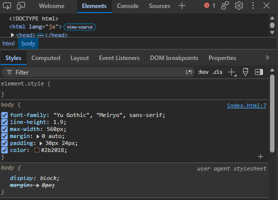
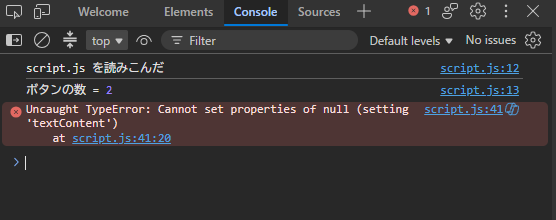

08
D A Y 8 / S H I P
直して、
世に出す
エラーの読み方、F12の使い方、そして
作ったものをURLで人に渡す方法。
第8回（最終回）／ デバッグ・公開・これからの進み方

公開って、
お金かかるやつでは……？
お金かかるやつでは……？
道具
F12 ── 開発者ツール
どのブラウザでも F12（または右クリック →「検証」）。使うのは実質3つのタブだけ。
Elements
今のHTMLと、当たっているCSSが見える。
- 右クリック →「検証」でその場所へジャンプ
- 右側でCSSをその場で書き換えて試せる
- 取り消し線＝負けている指定
Console
console.log の出力と、エラーが出る。
- 赤い文字＝エラー
- 右端の script.js:42 をクリックすると該当行へ
- ここに直接JSを打って試せる
Application
localStorage に保存された中身が見える。
- Local Storage → ファイル名
- 保存できているか一発で確認
- 右クリックで削除して初期化テスト
F12 → Elements

スマホ表示の確認もここ
左上のスマホのアイコンを押すと、画面サイズを自由に変えて確認できる。
実機がなくてもレスポンシブの確認ができる。
デバッグ ①
赤い文字は、味方
Console

種類
TypeError
内容
null に書こうとした
場所
script.js の41行目
この3つが必ず書いてある。読めば8割方、原因は分かる。
英語が分からなくても大丈夫
エラー文をそのままコピーして、AIか検索窓に貼る。
これは「ズル」ではなく、プロが毎日やっていること。
いちばん最初のエラーを見る
エラーが10個出ていても、たいてい1個目が原因で、残りはその巻き添え。
上から順に潰して。
エラーが出ない＝正しい、ではない
思った通りに動かないのにエラーが無いときは、
console.log でどこまで来ているかを確認する。
デバッグ ②
よく出るエラー 10選
| メッセージ | 意味 | だいたいの原因 |
|---|---|---|
| Cannot read properties of null | 存在しないものを触った | id のスペルミス／script が head にある |
| 〇〇 is not defined | そんな名前は無い | 変数名のタイプミス（大文字小文字も別） |
| 〇〇 is not a function | 関数じゃないものを呼んだ | メソッド名のつづり違い |
| Unexpected token | 文法がおかしい | かっこ・クォートの閉じ忘れ |
| Unexpected end of input | 途中で終わっている | } の閉じ忘れ |
| Assignment to constant variable | const を書き換えた | let にする |
| Failed to load resource 404 | ファイルが見つからない | パスかファイル名のミス |
| Maximum call stack size exceeded | 無限に呼び合っている | 関数が自分を呼び続けている |
| （画面が真っ白） | — | HTMLのタグ閉じ忘れ／JSが最初の行で落ちた |
| （何も起きない） | — | script が読み込まれていない |
reference/errors.html に、もっと詳しい一覧と直し方がある。
デバッグ ③
壊れたときの、決まった手順
- 直前に何をした？ いちばん最後に書き足した部分が犯人。まず消して確かめる
- F12 を開く 赤い文字があるか。あれば1個目を読む
- console.log を挟む 処理がそこまで来ているか／中身は何か
- 半分に切る 怪しい範囲をコメントアウトして、動く／動かないを二分探索する
- それでも分からない エラー文＋該当コードをAIに貼る
playground/ask-ai.html が、貼る文を作ってくれる
やってはいけないこと
原因が分からないままあちこち書き換える。
直った理由が分からないと、次また同じ所で詰まる。
こまめに保存しておく
動いた状態のファイルをコピーして残しておくと、
「壊れたら戻す」ができる。
index_ok.html みたいな雑な名前で十分。
index_ok.html みたいな雑な名前で十分。
寝る
本当。30分粘るより、翌朝見たほうが早く見つかる。
C H A P T E R / 0 2
人に渡せる形にする
今はまだ、自分のPCの中にしかない。
URLで渡せるようにする。

公開 ①
file:/// と https:// のちがい
今の状態
file:///C:/Users/…/index.html
自分のPCのファイルを直接開いているだけ。
- 他の人には見られない
- URLを送っても開けない
- スマホで見られない
公開した状態
https://ユーザー名.github.io/web/
世界中のどこからでも開けるURL。
- 友達にURLを送るだけ
- スマホでも開ける
- 無料
やることは「ファイルをどこかに置く」だけ
HTML・CSS・JS はブラウザさえあれば動くので、
サーバー側で何か動かす必要がない。だから公開がとても簡単。
（Python などで裏側を作った場合は、もう少し話が複雑になる）
公開 ②
GitHub Pages で公開する
- github.com でアカウントを作る（無料）
- 右上の ＋ → New repository
名前は半角英数字。Public を選ぶ - uploading an existing file をクリック
- 作ったフォルダの中身をまるごとドラッグ＆ドロップ
index.html が一番上の階層に来るように - Commit changes を押す
- Settings → Pages を開く
- Branch を main にして Save
- 1〜2分待つとURLが表示される
Public にする＝誰でも見られる
コードもページも全世界に公開される。
個人情報・本名・住所・パスワードを書いていないか、 公開前に必ず確認して。
個人情報・本名・住所・パスワードを書いていないか、 公開前に必ず確認して。
画像の権利にも注意
ネットで拾った画像やイラストは、そのまま公開すると権利侵害になり得る。
身内で遊ぶだけならまだしも、公開するなら自作かフリー素材に差し替えること。
画面の絵つきの手順書
reference/publish.html に、どこを押すかを1枚ずつ絵にしてある。
404や画像が出ないときの直し方も、そこに全部。
公開 ③
「みんなで共有」したくなったら
localStorage はそのブラウザの中だけ。 他の人と同じデータを見るには、外に置き場所が要る。
| やりたいこと | 必要なもの |
|---|---|
| 自分の記録を残す | localStorage（DAY 6） |
| みんなのスコアを集める | Firebase など |
| ログイン機能 | Firebase Authentication |
| 画像のアップロード | Firebase Storage |
Firebase とは
Google の提供する「サーバーを自分で用意しなくていい」仕組み。
JavaScript から数行呼ぶだけで、データの保存・読み出し・ログインができる。
ただし、順番を守る
サイトが完全に動くようになってから手をつけること。
動いていない状態でFirebaseを足すと、
「どっちが原因で動かないのか」が分からなくなる。
ここまで来たらもう自走できる
Firebase は公式のドキュメントとサンプルが充実している。
DAY 7 の型（イメージ → 機能 → 必要なもの → 流れ → 実装）で進めれば、
同じやり方で身につく。
やるときは別紙で
reference/firebase.html に、つなぐところから
感想を書いてもらうところまでまとめた。画面の絵つき。
最後の話
ここから先、どう伸ばすか
① とにかく作る
教材を1周するより、しょうもないものを3つ作るほうが確実に伸びる。
- おみくじ
- 割り勘計算ツール
- 今日の献立ルーレット
- 友達の誕生日カード
全部、今日までの知識で作れる。
② 人のコードを読む
好きなサイトで F12。「これどうやってるんだろう」を潰していく。
- Elements で構造を見る
- CSSをその場でいじって試す
- 真似して自分のページに入れる
真似は上達の王道。
③ 調べ方を鍛える
全部おぼえる必要はない。たどり着ければいい。
- MDN（公式の辞書）
- 「CSS 中央揃え」など日本語で検索
- AIに「なぜこうなる？」と聞く
プロも毎日調べている。
AIとの付き合い方（結論）
大まかなコードを書かせるのも、面倒な部分を任せるのも、プロが普通にやっていること。
問題は丸投げすること。出てきたものを読んで、良いところを吸収する——これができる人だけが伸びる。
ふりかえり
9回で手に入れたもの
| 回 | できるようになったこと |
|---|---|
| DAY 0 | ファイルを作ってブラウザで開ける |
| DAY 1 | HTMLで文章のページが書ける |
| DAY 2 | 複数ページ・表・フォームが作れる |
| DAY 3 | CSSで色・文字・余白を整えられる |
| DAY 4 | 並べる・動かす・スマホ対応 |
| 回 | できるようになったこと |
|---|---|
| DAY 5 | ボタンで画面を変えられる |
| DAY 6 | データを持って画面を組み立てられる |
| DAY 7 | ゼロから設計して作れる |
| DAY 8 | 直せる・公開できる |
手元に残ったもの
自己紹介サイト（3ページ）／レイアウト版／JS版／
データ版／オリジナルのパーティゲーム
いちばん大きい変化
「Webサイトってどうやって作るんだろう」が
「作ればいいだけ」に変わったこと。
T H A N K Y O U
あとは、
作るだけ。
わからなくなったら reference/ の資料へ。
それでも詰まったら、聞いて。
全9回 ／ おつかれさまだった

おつかれ。
あとは勝手に作れるようになるから、
たまに見せて。
あとは勝手に作れるようになるから、
たまに見せて。